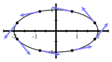
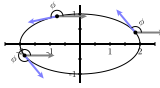

How can you measure how fast a path is turning (regardless of the parameterization)?
What is the radius of curvature for a path at a given location?
We now have a way to measure direction of travel and direction of turning. speed will give us an idea about how fast we are moving along the curve, but we dont have a way to measure how much turning is happening at a given location. In this section, we will try to measure how quickly a path is turning
Preview Activity10.6.1.
Draw curve with flat and tight curve. Draw T at P1 and Q1. Now draw T at P2 and Q2. Note that P1 and P2 are separated by the same amount of arc length as Q1 and Q2. Based on your T vectors, do youthink the direction of travel is changing faster at P or Q. Explain your ideas.
define curvature as the change in T in terms of steps in arc length
Given a space curve, there are two natural geometric questions one might ask: how long is the curve and how much does it bend? In this section, we answer both questions by developing techniques for measuring the length of a space curve as well as its curvature.
Subsection10.6.1Curvature
For a smooth space curve, the curvature measures how fast the curve is bending or changing direction at a given point. For example, we expect that a line should have zero curvature everywhere, while a circle (which is bending the same at every point) should have constant curvature. Circles with larger radii should have smaller curvatures.
To measure the curvature, we first need to describe the direction of the curve at a point. We may do this using a continuously varying tangent vector to the curve, as shown at left in Figure10.6.1. The direction of the curve is then determined by the angle \(\phi\) each tangent vector makes with a horizontal vector, as shown at right in Figure10.6.1.


Figure10.6.1.Left: Tangent vectors to an ellipse. Right: Angles of tangent vectors.
Informally speaking, the curvature will be the rate at which the angle \(\phi\) is changing as we move along the curve. Of course, this rate of change will depend on how we move along the curve; if we move with a greater speed along the curve, then \(\phi\) will change more rapidly. This is why the speed limit is sometimes lowered when we enter a curve on a highway. In other words, the rate of change of \(\phi\) will depend on the parametrization we use to describe the space curve. To eliminate this dependence on the parametrization, we choose to work with an arc length parametrization \(\vr(s)\text{,}\) which means we move along the curve with unit speed.
Using an arc length parametrization \(\vr(s)\text{,}\) we define the tangent vector \(\vT(s) = \vr'(s)\text{,}\) and note that \(|\vT(s)| = 1\text{;}\) that is, \(\vT(s)\) is a unit tangent vector. We then have \(\vT(s) = \langle \cos (\phi(s)),
\sin(\phi(s)) \rangle\text{,}\) which means that
Note that \(\kappa\) is the Greek lowercase letter kappa.
Activity10.6.2.
We should expect that the curvature of a line is 0 everywhere. To show that our definition of curvature measures this correctly in 2-space, recall that (10.3.4) gives us the arc length parameterization
of a line. Use this information to explain why the curvature of a line is 0 everywhere.
Recall that an arc length parameterization of a circle in 2-space of radius \(a\) centered at the origin is, from (10.3.3),
\begin{equation*}
\vr(s) = \left\langle a \cos\left(\frac{s}{a}\right),~
a \sin\left(\frac{s}{a}\right)\right\rangle.
\end{equation*}
Show that the curvature of this circle is the constant \(\frac{1}{a}\text{.}\) What can you say about the relationship between the size of the radius of a circle and the value of its curvature? Why does this make sense?
So, as expected, larger circles have smaller curvature.
The definition of curvature relies on our ability to parameterize curves in terms of arc length. Since we have seen that finding an arc length parametrization can be difficult, we would like to be able to express the curvature in terms of a more general parametrization \(\vr(t)\text{.}\)
To begin, we need to describe the vector \(\vT\text{,}\) which is a vector tangent to the curve having unit length. Of course, the velocity vector \(\vr'(t)\) is tangent to the curve; we simply need to normalize its length to be one. This means that we may take
This last formula allows us to use any parameterization of a curve to calculate its curvature. There is another useful formula, given below, whose derivation is left for the exercises.
Formulas for curvature.
If \(\vr\) is a vector-valued function defining a smooth space curve \(C\text{,}\) and if \(\vr'(t)\) is not zero and if \(\vr''(t)\) exists, then the curvature \(\kappa\) of \(C\) satisfies
Find the curvature of the ellipse. Assuming \(0 \lt b \lt a\text{,}\) at what points is the curvature the greatest and at what points is the curvature the smallest? Does this agree with your intuition?
The standard helix has parameterization \(\vr(t) = \cos(t) \vi + \sin(t) \vj + t \vk\text{.}\) Find the curvature of the helix. Does the result agree with your intuition?
If we assume that \(0 \lt b \lt a\text{,}\) then we should expect that ellipse to have the largest curvature at the points \((\pm a, 0)\) and the smallest at the points \((0, \pm b)\) (when \(t = \frac{\pi}{2} + \pi k\) for some integer \(k\)). The denominator of our curvature function can be written as
The curvature of the ellipse is largest when this denominator is smallest, or when \(t = 0\) or \(t=\pi\text{.}\) These \(t\) values correspond to the points \((\pm a, 0)\text{.}\) Similarly, the curvature of the ellipse is smallest when the denominator is largest, or when \(t = \frac{\pi}{2}\) and \(t = \frac{3\pi}{2}\text{.}\) These \(t\) values correspond to the points \((0, \pm b)\) as expected.
The curvature has another interpretation. Recall that the tangent line to a curve at a point is the line that best approximates the curve at that point. The curvature at a point on a curve describes the circle that best approximates the curve at that point. Remembering that a circle of radius \(a\) has curvature \(1/a\text{,}\) then the circle that best approximates the curve near a point on a curve whose curvature is \(\kappa\) has radius \(1/\kappa\) and will be tangent to the tangent line at that point and has its center on the concave side of the curve. This circle, called the osculating circle of the curve at the point, is shown in Figure10.6.3 for a portion of a parabola.
Figure10.6.3.The osculating circle
Subsection10.6.2Summary
We define the curvature \(\kappa\) of a curve in 2- or 3-space to be the rate of change of the magnitude of the unit tangent vector with respect to arc length, or
The WeBWorK problems are written by many different authors. Some authors use parentheses when writing vectors, e.g., \((x(t),y(t),z(t))\) instead of angle brackets \(\langle x(t),y(t),z(t) \rangle\text{.}\) Please keep this in mind when working WeBWorK exercises.
1.
Find the curvature of \(y=\sin \left( 1 x \right)\) at \(x = \frac{\pi}{4}\text{.}\)
2.
Find the curvature \(\kappa (t)\) of the curve \(\mathbf{r} (t) = \left( 3 \sin t \right)
\mathbf{i} + \left( 3 \sin t \right) \mathbf{j} + \left( -1 \cos t \right) \mathbf{k}\)
3.
A factory has a machine which bends wire at a rate of 2 unit(s) of curvature per second. How long does it take to bend a straight wire into a circle of radius 9?
seconds
4.
Let \(y = f(x)\) define a curve in the plane. We can consider this curve as a curve in three-space with \(z\)-coordinate 0.
Find a parameterization of the form \(\vr(t) = \langle x(t), y(t), z(t) \rangle\) of the curve \(y=f(x)\) in three-space.
Consider the single variable function defined by \(y = 4x^2 - x^3.\)
Find a parameterization of the form \(\vr(t) = \langle x(t), y(t) \rangle\) that traces the curve \(y = 4x^2 - x^3\) on the interval from \(x = -3\) to \(x = 3\text{.}\)
Write a definite integral which, if evaluated, gives the exact length of the given curve from \(x = -3\) to \(x = 3\text{.}\) Why is the integral difficult to evaluate exactly?
Determine the curvature, \(\kappa(t)\text{,}\) of the parameterized curve. (Exercise10.6.3.4 might be useful here.)
Use appropriate technology to approximate the absolute maximum and minimum of \(\kappa(t)\) on the parameter interval for your parameterization. Compare your results with the graph of \(y = 4x^2 - x^3\text{.}\) How do the absolute maximum and absolute minimum of \(\kappa(t)\) align with the original curve?
Solution.
If we let \(x(t) = t\text{,}\) then \(y(t) = 4t^2-t^3\text{.}\) So a parameterization of the curve on the interval from \(x = -3\) to \(x = 3\) is
The sum under the root makes this integral difficult to evaluate exactly.
The curvature \(\kappa(t)\) can be calculated using the formula from Exercise10.6.3.4. Since \(f'(x) = 8x - 3x^2\) and \(f''(x) = 8-6x\text{,}\) we have
A plot of \(\kappa(t)\) on the interval \([-3,3]\) shows relative maxima near 0 and 2.8. A computer algebra system shows that \(\frac{ 8-6t }{ \left[1+(8t-3t^2)^2\right]^{3/2} }\) has critical numbers at approximately \(-0.003881710157\) and \(2.670548377\text{.}\) Now
the minimum value of \(\kappa\) on \([-3,3]\) is approximately 0.0001958900647. The graph of \(y=4x^2-x^3\) is close to linear at \(x=-3\text{,}\) which accounts for the low value of \(\kappa\) there. The largest curvature in the graph is just after the critical point at \(x = \frac{8}{3} \approx 2.666\text{.}\)
In Exercise10.4.6.4 we showed that \(\lvert \vT(t) \rvert = 1\) implies that \(\vT(t)\) is orthogonal to \(\vT'(t)\) for every value of \(t\text{.}\) Explain what this tells us about \(\lvert \vT(t) \times \vT'(t) \rvert\) and conclude that
In this exercise we explore how to find the osculating circle for a given curve. As an example, we will use the curve defined by \(f(x) = x^2\text{.}\) Recall that this curve can be parameterized by \(x(t) = t\) and \(y(t)=t^2\text{.}\)
Use (10.6.1) to find \(\vT(t)\) for our function \(f\text{.}\)
To find the center of the osculating circle, we will want to find a vector that points from a point on the curve to the center of the circle. Such a vector will be orthogonal to the tangent vector at that point. Recall that \(\vT(s) = \langle \cos(\phi(s)), \sin(\phi(s)) \rangle\text{,}\) where \(\phi\) is the angle the tangent vector to the curve makes with a horizontal vector. Use this fact to show that
Explain why this tells us that \(\frac{dT}{ds}\) is orthogonal to \(\vT\text{.}\) Let \(\vN\) be the unit vector in the direction of \(\frac{dT}{ds}\text{.}\) The vector \(\vN\) is called the principal unit normal vector and points in the direction toward which the curve is turning. The vector \(\vN\) also points toward the center of the osculating circle.
Find \(\vT\) at the point \((1,1)\) on the graph of \(f\text{.}\) Then find \(\vN\) at this same point. How do you know you have the correct direction for \(\vN\text{?}\)
Let \(P\) be a point on the curve. Recall that \(\rho = \frac{1}{\kappa}\) at point \(P\) is the radius of the osculating circle at point \(P\text{.}\) We call \(\rho\) the radius of curvature at point \(P\text{.}\) Let \(C\) be the center of the osculating circle to the curve at point \(P\text{,}\) and let \(O\) be the origin. Let \(\mathbf{\gamma}\) be the vector \(\overrightarrow{OC}\text{.}\) See Figure10.6.4 for an illustration using an arbitrary function \(f\text{.}\)
Figure10.6.4.An osculating circle.
Which vector, in terms of \(\rho\) and \(\vN\) points from the point \(P\) to the point \(C\text{?}\) Use this vector to explain why
Finally, use the previous work to find the center of the osculating circle for \(f\) at the point \((1,1)\text{.}\) Draw pictures of the curve and the osculating circle to verify your work.